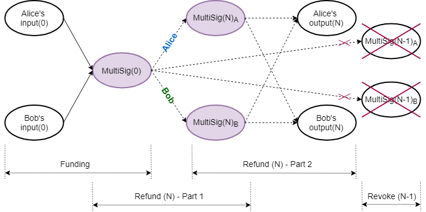
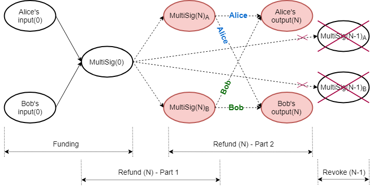
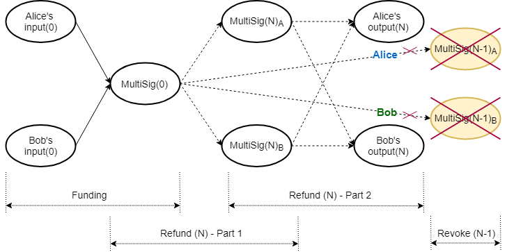

Laser Beam
- Introduction
- Detail Scheme
- Conclusions, Observations and Recommendations
- Appendices
- References
- Contributors
Introduction
Proof-of-Work (PoW) blockchains are notoriously slow, as transactions need to be a number of blocks in the past to be confirmed, and have poor scalability properties. A payment channel is a class of techniques designed to allow two or more parties to make multiple blockchain transactions, without committing all of the transactions to the blockchain. Resulting funds can be committed back to the blockchain. Payment channels allow multiple transactions to be made within off-chain agreements. They keep the operation mode of the blockchain protocol, but change the way in which it is used in order to deal with the challenge of scalability [1].
The Lightning Network is a second-layer payment protocol that was originally designed for Bitcoin, and which enables instant transactions between participating nodes. It features a peer-to-peer system for making micropayments through a network of bidirectional payment channels. The Lightning Network's dispute mechanism requires all users to constantly watch the blockchain for fraud. Various mainnet implementations that support Bitcoin exist and, with small tweaks, some of them are also able to support Litecoin ([2], [3], [4], [10]).
Laser Beam is an adaptation of the Lightning Network for the Mimblewimble protocol, to be implemented for Beam ([5], [6], [7]). At the time of writing of this report (November 2019), the specifications were far advanced, but still work in progress. Beam has a working demonstration in its mainnet repository, which at this stage demonstrates off-chain transactions in a single channel between two parties [8]. According to the Request for Comment (RFC) documents, Beam plans to implement routing across different payment channels in the Lightning Network style.
Detail Scheme
Beam's version of a multisignature (MultiSig) is actually a $2\text{-of-}2$ multiparty Unspent Transaction Output (UTXO), where each party keeps its share of the blinding factor of the Pedersen commitment, $C(v,k_{1}+k_{2})=\Big(vH+(k_{1}+k_{2})G\Big)$, secret. (Refer to Appendix A for notation used.) The multiparty commitment is accompanied by a single multiparty Bulletproof range proof, similar to that employed by Grin, where the individual shares of the blinding factor are used to create the combined range proof [9].
In the equations that follow Alice's and Bob's contributions are denoted by subscripts $_{a}$ and $_{b}$ respectively; $f$ is the fee and $\mathcal{X}$ is the excess. Note that blinding factors denoted by $\hat{k}$, $k^{\prime}$ and $k^{\prime\prime}$, and values denoted by $v^{\prime}$ and $v^{\prime\prime}$, have a special purpose, discussed later, so that $\hat{k}_{N_{a}} \neq k_{N_{a}} \neq k^{\prime} \neq k^{\prime\prime}_{N_{a}}$ and $v_{N_{a}} \neq v^{\prime}_{N_{a}} \neq v^{\prime\prime}_{N_{a}}$.
Funding Transaction
The parties collaborate to create the multiparty UTXO (i.e. commitment and associated multiparty range proof), combined on‑chain funding transaction (Figure 1) and an initial refund transaction for each party (off‑chain). All refund transactions have a relative time lock in their kernel, referencing the kernel of the original combined funding transaction, which has to be confirmed on the blockchain.

The initial funding transaction between Alice and Bob is depicted in (1). The lock height in the signature challenge corresponds to the current blockchain height. Input commitment values and blinding factors are identified by superscript $^{\prime\prime}$.
$$ \begin{aligned} -\text{Inputs}(0)+\text{MultiSig}(0)+\text{fee} &= \text{Excess}(0) \\ -\Big((v^{\prime\prime}_{0_{a}}H+k^{\prime\prime}_{0_{a}}G)+(v^{\prime\prime}_{0_{b}}H+k^{\prime\prime}_{0_{b}}G)\Big)+\Big(v_{0}H+(k_{0_{a}}+k_{0_{b}})G\Big)+fH &= \mathcal{X}_{0} \end{aligned} \tag{1} $$
Alice and Bob also need to set up their own respective refund transactions so they can be compensated should the channel never be used; this is performed via a refund procedure. A refund procedure (off‑chain) consists of four parts, whereby each user creates two transactions: one kept partially secret (discussed below) and the other shared. Each partially secret transaction creates a different intermediate multiparty UTXO, which is then used as input in two shared transactions, to spending the same set of outputs to each participant.
All consecutive refund procedures work in exactly the same way. In the equations that follow, double subscripts $_{AA}$, $_{AB}$, $_{BA}$ and $_{BB}$ have the following meaning: the first letter and the second letter indicate who controls the transaction and who created the value, respectively. Capitalized use of $R$ and $P$ denotes public nonce and public blinding factor respectively. The $N_{\text{th}}$ refund procedure is as follows:
Refund Procedure
Alice - Part 1

Alice and Bob set up Alice's intermediate MultiSig funding transaction (Figure 2), spending the original funding MultiSig UTXO. The lock height $h_{N}$ corresponds to the current blockchain height.
$$ \begin{aligned} -\text{MultiSig}(0)+\text{MultiSig}(N)_{A}+\text{fee} & =\text{Excess}(N)_{A1} \\ -\Big(v_{0}H+(k_{0_{a}}+k_{0_{b}})G\Big) + \Big((v_{0}-f)H+(\hat{k}_{N_{a}}+k_{N_{b}})G\Big) + fH &= \mathcal{X}_{N_{A1}} \end{aligned} \tag{2} $$
They collaborate to create $\text{MultiSig}(N)_{A}$, its Bulletproof range proof, the signature challenge and Bob's portion of the signature, $s_{N_{AB1}}$. Alice does not share the final kernel and thus keeps her part of the aggregated signature, $s_{N_{AA1}}$, hidden.
$$ \begin{aligned} \mathcal{X}_{N_{A1}} &= (-k_{0_{a}}+\hat{k}_{N_{a}})G+(-k_{0_{b}}+k_{N_{b}})G \\ &= P_{N_{AA1}}+P_{N_{AB1}} \end{aligned} \tag{3} $$
$$ \begin{aligned} \text{Challenge:}\quad\mathcal{H}(R_{N_{AA1}}+R_{N_{AB1}}\parallel P_{N_{AA1}}+P_{N_{AB1}}\parallel f\parallel h_{N}) \end{aligned} \tag{4} $$
$$ \begin{aligned} \text{Final signature tuple, kept secret:}\quad(s_{N_{AA1}}+s_{N_{AB1}},R_{N_{AA1}}+R_{N_{AB1}}) \end{aligned} \tag{5} $$
$$ \begin{aligned} \text{Kernel of this transaction:}\quad\mathcal{K}_{N_{AA1}} \end{aligned} \tag{6} $$
Bob - Part 1
Alice and Bob set up Bob's intermediate MultiSig funding transaction (Figure 2), also spending the original funding MultiSig UTXO. The lock height $h_{N}$ again corresponds to the current blockchain height.
$$ \begin{aligned} -\text{MultiSig}(0)+\text{MultiSig}(N)_{B}+\text{fee} & =\text{Excess}(N)_{B1} \\ -\Big(v_{0}H+(k_{0_{a}}+k_{0_{b}})G\Big) + \Big((v_{0}-f)H+(k_{N_{a}}+\hat{k}_{N_{b}})G\Big) + fH &= \mathcal{X}_{N_{B1}} \end{aligned} \tag{7} $$
They collaborate to create $\text{MultiSig}(N)_{A}$, its Bulletproof range proof, the signature challenge and Alice's portion of the signature. Bob does not share the final kernel and thus keeps his part of the aggregated signature hidden.
$$ \begin{aligned} \mathcal{X}_{N_{B1}} &= (-k_{0_{a}}+k_{N_{a}})G+(-k_{0_{b}}+\hat{k}_{N_{b}})G \\ &= P_{N_{BA1}}+P_{N_{BB1}} \end{aligned} \tag{8} $$
$$ \begin{aligned} \text{Challenge:}\quad\mathcal{H}(R_{N_{BA1}}+R_{N_{BB1}}\parallel P_{N_{BA1}}+P_{N_{BB1}}\parallel f\parallel h_{N}) \end{aligned} \tag{9} $$
$$ \begin{aligned} \text{Final signature tuple, kept secret:}\quad(s_{N_{BA1}}+s_{N_{BB1}},R_{N_{BA1}}+R_{N_{BB1}}) \end{aligned} \tag{10} $$
$$ \begin{aligned} \text{Kernel of this transaction:}\quad\mathcal{K}_{N_{BB1}} \end{aligned} \tag{11} $$
Alice - Part 2

Alice and Bob set up a refund transaction (Figure 3), which Alice controls, with the same relative time lock $h_{rel}$ to the intermediate funding transaction's kernel, $\mathcal{K}_{N_{AA1}}$. Output commitment values and blinding factors are identified by superscript $^{\prime}$.
$$ \begin{aligned} -\text{MultiSig}(N)_{A}+\text{Outputs}(N)+\text{fee} & =\text{Excess}(N)_{A2} \\ -\Big((v_{0}-f)H+(\hat{k}_{N_{a}}+k_{N_{b}})G\Big)+\Big((v_{N_{a}}^{\prime}H+k_{N_{a}}^{\prime}G)+(v_{N_{b}}^ {\prime}H+k_{N_{b}}^{\prime}G)\Big)+fH &=\mathcal{X}_{N_{A2}} \\ \end{aligned} \tag{12} $$
They collaborate to create the challenge and the aggregated signature. Because the final kernel $\mathcal{K}_{N_{AA1}}$ is kept secret, only its hash is shared. Alice shares this transaction's final kernel with Bob. The signature challenge is determined as follows:
$$ \begin{aligned} \mathcal{X}_{N_{A2}} &= (-\hat{k}_{N_{a}}+k_{N_{a}}^{\prime})G + (-k_{N_{b}}+k_{N_{b}}^{\prime})G \\ &= P_{N_{AA2}}+P_{N_{AB2}} \\ \end{aligned} \tag{13} $$
$$ \begin{aligned} \text{Challenge:}\quad\mathcal{H}(R_{N_{AA2}}+R_{N_{AB2}}\parallel P_{N_{AA2}}+P_{N_{AB2}}\parallel f \parallel\mathcal{H}(\mathcal{K}_{N_{AA1}})\parallel h_{rel}) \end{aligned} \tag{14} $$
Bob - Part 2
Alice and Bob set up a refund transaction (Figure 3), which Bob controls, with a relative time lock $h_{rel}$ to the intermediate funding transaction's kernel, $\mathcal{K}_{N_{BB1}}$. Output commitment values and blinding factors are identified by superscript $^{\prime}$.
$$ \begin{aligned} -\text{MultiSig}(N)_{B}+\text{Outputs}(N)+\text{fee} & =\text{Excess}(N)_{B2} \\ -\Big((v_{0}-f)H+(k_{N_{a}}+\hat{k}_{N_{b}})G\Big)+\Big((v_{N_{a}}^{\prime}H+k_{N_{a}}^{\prime}G)+(v_{N_{b}}^ {\prime}H+k_{N_{b}}^{\prime}G)\Big)+fH &=\mathcal{X}_{N_{B2}} \\ \end{aligned} \tag{15} $$
They collaborate to create the challenge and the aggregated signature. Because the final kernel $\mathcal{K}_{N_{BB1}}$ is kept secret, only its hash is shared. Bob shares this transaction's final kernel with Alice. The signature challenge is determined as follows:
$$ \begin{aligned} \mathcal{X}_{N_{B2}} &= (-k_{N_{a}}+k_{N_{a}}^{\prime})G + (-\hat{k}_{N_{b}}+k_{N_{b}}^{\prime})G \\ &= P_{N_{BA2}}+P_{N_{BB2}} \end{aligned} \tag{16} $$
$$ \begin{aligned} \text{Challenge:}\quad\mathcal{H}(R_{N_{BA2}}+R_{N_{BB2}}\parallel P_{N_{BA2}}+P_{N_{BB2}}\parallel f \parallel\mathcal{H}(\mathcal{K}_{N_{BB1}})\parallel h_{rel}) \end{aligned} \tag{17} $$
Revoke Previous Refund
Whenever the individual balances in the channel change, a new refund procedure is negotiated, revoking previous agreements (Figure 4).

Revoking refund transactions involves revealing blinding factor shares for the intermediate multiparty UTXOs, thereby nullifying their further use. After the four parts of the refund procedure have been concluded successfully, the previous round's blinding factor shares $\hat{k}_{(N-1)}$ are revealed to each other, in order to revoke the previous agreement.
Alice:
$$ \begin{aligned} \text{MultiSig}(N-1)_{A}:\quad\Big((v_{0}-f)H+(\hat{k}_{(N-1)_{a}}+k_{(N-1)_{b}})G\Big) & \quad & \lbrace\text{Alice's commitment}\rbrace \\ \hat{k}_{(N-1)_{a}} & \quad & \lbrace\text{Alice shares with Bob}\rbrace \\ \end{aligned} \tag{18} $$
Bob:
$$ \begin{aligned} \text{MultiSig}(N-1)_{B}:\quad\Big((v_{0}-f)H+(k_{(N-1)_{a}}+\hat{k}_{(N-1)_{b}})G\Big) & \quad & \lbrace\text{Bob's commitment}\rbrace \\ \hat{k}_{(N-1)_{b}} & \quad & \lbrace\text{Bob shares with Alice}\rbrace \end{aligned} \tag{19} $$
Note that although the kernels for transactions (2) and (10) were kept secret, when the Bulletproof range proofs for $\text{MultiSig}(N-1)_{A}$ and $\text{MultiSig}(N-1)_{B}$ were constructed, resultant values of those MultiSig Pedersen commitments were revealed to the counterparty. Each of them is thus able to verify the counterparty's blinding factor share by constructing the counterparty's MultiSig Pedersen commitment.
Alice verifies:
$$
\begin{aligned}
\Big((v_{0}-f)H+(k_{(N-1)_{a}}+\hat{k}_{(N-1)_{b}})G\Big) \overset{?}{=} C(v_{0}-f,\ k_{(N-1)_{a}}+
\hat{k}_{(N-1)_{b}})
\end{aligned}
\tag{20}
$$
Bob verifies:
$$ \begin{aligned} \Big((v_{0}-f)H+(\hat{k}_{(N-1)_{a}}+k_{(N-1)_{b}})G\Big) \overset{?}{=} C(v_{0}-f,\ \hat{k}_{(N-1)_{a}}+ k_{(N-1)_{b}}) \end{aligned} \tag{21} $$
Although each party will now have its counterparty's blinding factor share in the counterparty's intermediate multiparty UTXO, they will still not be able to spend it, because the corresponding transaction kernel is still kept secret by the counterparty. The previous round's corresponding transaction (2) or (10), with a fully signed transaction kernel, was never published on the blockchain.
Punishment Transaction
If a counterparty decides to broadcast a revoked set of refund transactions, and if the honest party is actively monitoring the blockchain and able to detect the attempted foul play, a punishment transaction can immediately be constructed before the relative time lock $h_{rel}$ expires. Whenever any of the counterparty's intermediate multiparty UTXOs, $\text{MultiSig}(N-m)\ \text{for}\ 0<m<N$, becomes available in the blockchain, the honest party can spend all the funds to its own output, because it knows the total blinding factor and the counterparty does not.
Channel Closure
Whenever the parties agree to a channel closure, the original on‑chain multiparty UTXO, $\text{MultiSig}(0)$, is spent to their respective outputs in a collaborative transaction. In the event of a single party deciding to close the channel unilaterally for whatever reason, its latest refund transaction is broadcast, effectively closing the channel. In either case, the parties have to wait for the relative time lock $h_{rel}$ to expire before being able to claim their funds.
Opening a channel requires one collaborative funding transaction on the blockchain. Closing a channel involves each party broadcasting its respective portion of the refund transaction to the blockchain, or collaborating to broadcast a single settlement transaction. A round-trip open channel, multiple off‑chain spending and close channel thus involves, at most, three on‑chain transactions.
Conclusions, Observations and Recommendations
-
MultiSig
The Laser Beam MultiSig corresponds to a Mimblewimble $2-of-2$ Multiparty Bulletproof UTXO, as described here. There is more than one method for creating the MultiSig's associated Bulletproof range proof, and utilizing the Bulletproofs MPC Protocol will enable wallet reconstruction. It may also make information sharing, while constructing the Bulletproof range proof, more secure.
-
Linked Transactions
Part 2 of the refund procedure requires a kernel with a relative time lock to the kernel of its corresponding part 1 refund procedure, when those kernels are not yet available in the base layer, as well as a different, non-similar, signature challenge. Metadata about the linked transaction kernel and non-similar signature challenge creation must therefore be embedded within part 2 refund transaction kernels.
-
Refund Procedure
In the event that for round $N$, Alice or Bob decides to stop negotiations after their respective part 1 has been concluded and that transaction has been broadcast, the result would be that funding UTXO, $\text{MultiSig}(0)$, would be replaced by the respective $\text{MultiSig}(N)$. The channel will still be open. However, it also cannot be spent unilaterally, as the blinding factor is shared. Any new updates of the channel will then need to be based on $\text{MultiSig}(N)$ as the funding UTXO. Note that this cannot happen if the counterparties construct transactions for part 1 and part 2, conclude part 2 by signing it, and only then sign part 1.
In the event that for round $N$, Alice or Bob decides to stop negotiations after their respective part 1 and part 2 have been concluded and those transactions have been broadcast, it will effectively be a channel closure.
-
Revoke Attack Vector
When revoking the previous refund $(N-1)$, Alice can get hold of Bob's blinding factor share $\hat{k}_{(N-1)_{b}}$ (19), and after verifying that it is correct (20), refuse to give up her blinding factor share. This will leave Alice with the ability to broadcast any of refund transactions $(N-1)$ and $N$, without fear of Bob broadcasting a punishment transaction. Bob, on the other hand, will only be able to broadcast refund transaction $N$.
Appendices
Appendix A: Notation Used
-
Let $p$ be a large prime number, $\mathbb{Z}_{p}$ denote the ring of integers $\mathrm{mod} \text{ } p$, and $\mathbb{F}_{p}$ be the group of elliptic curve points.
-
Let $G\in\mathbb{F}_{p}$ be a random generator point (base point) and let $H\in\mathbb{F}_{p}$ be specially chosen so that the value $x_{H}$ to satisfy $H=x_{H}G$ cannot be found, except if the Elliptic Curve Discrete Logarithm Problem (ECDLP) is solved.
-
Let commitment to value $v\in\mathbb{Z}_{p}$ be determined by calculating $C(v,k)=(vH+kG)$, which is called the Elliptic Curve Pedersen Commitment (Pedersen Commitment), with $k\in\mathbb{Z}_{p}$ (the blinding factor) a random value.
-
Let scalar multiplication be depicted by $\cdot$, e.g. $e\cdot(vH+kG)=e\cdot vH+e\cdot kG$.
References
[1] J. A. Odendaal, "Layer 2 Scaling Survey - Tari Labs University" [online]. Available: https://tlu.tarilabs.com/scaling/layer2scaling-landscape/layer2scaling-survey.html. Date accessed: 2019‑10‑06.
[2] J. Poon, T. Dryja (2016). "The Bitcoin Lightning Network: Scalable Off-Chain Instant Payments" [online]." Available: http://lightning.network/lightning-network-paper.pdf. Date accessed: 2019‑07‑04.
[3] "GitHub: lightningnetwork/lightning-rfc: Lightning Network Specifications" [online]. Available: https://github.com/lightningnetwork/lightning-rfc. Date accessed: 2019‑07‑04.
[4] X. Wang, "What is the situation of Litecoin's Lightning Network now?" [online]. Available: https://coinut.com/blog/whats-the-situation-of-litecoins-lightning-network-now. Date accessed: 2019‑09‑11.
[5] The Beam Team, "GitHub: Lightning Network - BeamMW/beam Wiki" [online]. Available: https://github.com/BeamMW/beam/wiki/Lightning-Network. Date accessed: 2019‑07‑05.
[6] F. Jahr, "Beam - Lightning Network Position Paper. (v 1.0)" [online]. Available: https://docs.beam.mw/Beam_lightning_network_position_paper.pdf. Date accessed: 2019‑07‑04.
[7] F. Jahr, "GitHub: fjahr/lightning-mw, Lightning Network Specifications" [online]. Available: https://github.com/fjahr/lightning-mw. Date accessed: 2019‑07‑04.
[8] The Beam Team, "GitHub: beam/node/laser_beam_demo at master - BeamMW/beam" [online]. Available: https://github.com/BeamMW/beam/tree/master/node/laser_beam_demo. Date accessed: 2019‑07‑05.
[9] The Beam Team, "GitHub: beam/ecc_bulletproof.cpp at mainnet - BeamMW/beam" [online]. Available: https://github.com/BeamMW/beam/blob/mainnet/core/ecc_bulletproof.cpp. Date accessed: 2019‑07‑05.
[10] D. Smith, N. Kohen, and C. Stewart, “Lightning 101 for Exchanges” [online]. Available: https://suredbits.com/lightning-101-for-exchanges-overview. Date accessed: 2019‑11‑06.